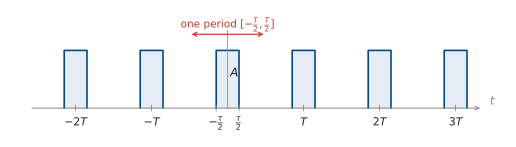
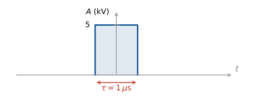
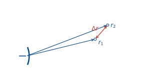
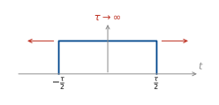
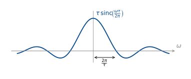
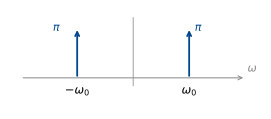
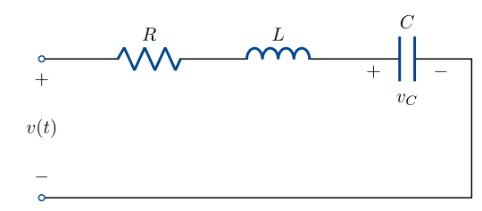
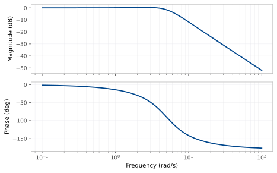

Week 5 — Lecture notes
Aperiodic signals and the Fourier transform
Other formats:
📄 PDF- Quiz 1 review/questions
- Periodic \longrightarrow aperiodic: motivation
- Fourier transform as the limit of the Fourier series
- Fourier transform vs Fourier series: what changed?
- Fourier transform pairs
- Properties of the Fourier transform.
- Examples: radar, optics, RLC.
Last week: we represented a periodic signal as the sum of sinusoids, using the Fourier series.
This gave us a spectrum: the frequency content of the signal.
But: most signals are not periodic: a radar pulse, a plucked note, a spoken word …
Question of the lecture: what does the spectrum of a one-off signal look like?
Core idea: we can take the Fourier series of a T-periodic signal and let T \to \infty to get an aperiodic signal.
Periodic \longrightarrow aperiodic: motivation
Let’s illustrate this by example: a pulse train, like a radar signal.
Take
u_T(t) = A\sum_{m\in\mathbb{Z}} p_\tau(t-mT), \qquad p_\tau(t) = \begin{cases} 1, & |t| < \dfrac{\tau}{2} \\[6pt] 0, & |t| > \dfrac{\tau}{2}\end{cases}, \qquad 0 < \tau < T .

\tau varies on time. \; T varies the period. \; The ratio \dfrac{\tau}{T} is called the “duty cycle”.
Let’s calculate the Fourier series coefficients over the red period, [-\tfrac{T}{2}, \tfrac{T}{2}]. This contains a single pulse.
\begin{aligned} c_k &= \frac{1}{T}\int_{-T/2}^{T/2} u_T(t)\,e^{-jk\omega_0 t}\,\mathrm{d}t && \left(\omega_0 = \frac{2\pi}{T}\right) \\[8pt] &= \frac{A}{T}\int_{-\tau/2}^{\tau/2} e^{-jk\omega_0 t}\,\mathrm{d}t && \left(T = \frac{2\pi}{\omega_0}\right) \end{aligned}
k = 0:
c_0 = \frac{A}{T}\int_{-\tau/2}^{\tau/2} 1\,\mathrm{d}t = \frac{A\tau}{T}.
Use evenness — only need cos series.
k \neq 0:
\begin{aligned} c_k &= \frac{A}{T}\left[\frac{e^{-jk\omega_0 t}}{-jk\omega_0}\right]_{-\tau/2}^{\tau/2} = \frac{A\omega_0}{2\pi}\,\frac{1}{-jk\omega_0} \left(e^{-jk\omega_0 \frac{\tau}{2}} - e^{\,jk\omega_0 \frac{\tau}{2}}\right) \\[8pt] &= \frac{Aj}{2\pi k}\left(-2j\sin\!\left(\frac{k\omega_0\tau}{2}\right)\right) \\[8pt] &= \frac{A}{\pi k}\sin\!\left(k\,\frac{\pi\tau}{T}\right) \\[8pt] &= A\,\frac{\sin(\pi k d)}{\pi k} && \left(d = \frac{\tau}{T}\right) \end{aligned}
\boxed{\; c_k = A\,d\,\operatorname{sinc}(kd). \;}
Recall: \operatorname{sinc}(x) = \dfrac{\sin(\pi x)}{\pi x}.
Fourier transform as the limit of the Fourier series
Now, how does this depend on the period T?
\begin{aligned} c_k &= A\,\frac{\tau}{T}\operatorname{sinc}\!\left(k\,\frac{\tau}{T}\right) \\[6pt] &= A\,\frac{\tau}{T}\operatorname{sinc}\!\left(k\,\frac{\tau\omega_0}{2\pi}\right). \end{aligned}
Call k\omega_0 = \omega. Then
T c_k = A\tau \operatorname{sinc}\!\left(\frac{\tau\omega}{2\pi}\right) =: E(\omega) \qquad \text{("envelope")}
Where are the zeros?
\begin{aligned} \operatorname{sinc}\!\left(\frac{\tau\omega}{2\pi}\right) &= 0 \\[6pt] \sin\!\left(\frac{\tau\omega}{2}\right) &= 0 \\[6pt] \frac{\tau\omega}{2} &= n\pi \quad \text{for } n \in \mathbb{Z} \\[6pt] \omega &= \frac{n2\pi}{\tau}. \end{aligned}
What happens as T \to \infty?
★ E(\omega) doesn’t change
★ Spacing becomes smaller.
What happens to the coefficients c_k?
Let’s define u(t) = \displaystyle\lim_{T\to\infty} u_T(t).
c_k = \frac{1}{T}\int_{-T/2}^{T/2} u_T(t)\,e^{-jk\omega_0 t}\,\mathrm{d}t
We define the Fourier transform of u(t) by
\boxed{\; U(j\omega) := \lim_{T\to\infty} T c_k \Big|_{k\omega_0 \to \omega} = \int_{-\infty}^{\infty} u(t)\,e^{-j\omega t}\,\mathrm{d}t . \;}
This can be calculated for any signal for which the integral converges.
We know that the Fourier series can be used to reconstruct the original signal:
\boxed{\; u_T = \sum_{k=-\infty}^{\infty} c_k \phi_k = \sum_{k=-\infty}^{\infty} \langle u_T, \phi_k\rangle_P\,\phi_k, \qquad \phi_k(t) = e^{\,jk\omega_0 t} \;}
Week 4 lecture.
Do we get something similar in the Fourier transform limit?
We can rewrite the Fourier series as
\begin{aligned} u_T(t) &= \sum_{k=-\infty}^{\infty} T c_k\, e^{\,jk\omega_0 t}\,\frac{1}{T} && \left[\text{trying to get a “}\mathrm{d}\omega\text{” on the RHS}\right] \\[8pt] &= \sum_{k=-\infty}^{\infty} T c_k\, e^{\,jk\omega_0 t}\,\frac{\omega_0}{2\pi} && \left[\omega_0 = \text{spacing between samples}\right] \\[8pt] &= \sum_{k=-\infty}^{\infty} T c_k\, e^{\,j\omega t}\,\frac{\Delta\omega}{2\pi}. \end{aligned}
Then in the limit,
u(t) = \lim_{T\to\infty} \sum_{k=-\infty}^{\infty} T c_k\, e^{\,j\omega t}\, \frac{\Delta\omega}{2\pi}.
\boxed{\; u(t) = \frac{1}{2\pi}\int_{-\infty}^{\infty} U(j\omega)\,e^{\,j\omega t}\,\mathrm{d}\omega \;} \qquad \text{(the Inverse Fourier transform).}
We have illustrated this above for a pulse chain, but it holds for any signal for which the Fourier transform integral converges \left(\int_{-\infty}^{\infty}|u(t)|\,\mathrm{d}t < \infty \text{ is sufficient}\right).
What has changed versus the Fourier series?
Sum \longmapsto integral, discrete index k \longmapsto continuous variable, k\omega_0 \longmapsto \omega.
Units change. c_k has the same units as u. U(j\omega) has units of u \times \text{time}: it is a density. Must be integrated to get anything.
Example: the Kurnell weather radar from the week 2 tutorial.

The parameters \tau and T are varied independently:
\tau adjusts range resolution:

Consider two targets at ranges r_1 and r_2, with \Delta r := r_2 - r_1.
The round trip time for each pulse t_d = \dfrac{2r}{c} \;(c = 3\times10^{8}\ \mathrm{m\,s^{-1}}).
\Delta t_d = \frac{2\Delta r}{c}.
If \Delta t_d < \tau, the returning pulses overlap and can’t be distinguished.
The minimum distance that can be measured is therefore \Delta r = \dfrac{c\tau}{2}. For Kurnell, \tau = 1\,\mus, so \Delta r \approx 150\,m.
Why not make \tau even smaller?
Let’s check the spectrum again.
(Higher lobes are filtered — week 10.)
Small \tau makes \dfrac{2\pi}{\tau} big, so the lobe spreads and we need more bandwidth to transmit the pulse. Bandwidth is tightly regulated and very expensive!
Fourier transform pairs
The square \longleftrightarrow sinc Fourier transform pair is useful for radar design. Let’s derive some other useful pairs.
(a) u(t) = \delta(t).
\begin{aligned} U(j\omega) &= \int_{-\infty}^{\infty} \delta(t)\,e^{-j\omega t}\,\mathrm{d}t \\[6pt] &= 1 \qquad \text{(sifting property)}. \end{aligned}
(b) u(t) = e^{-at}H(t)
\begin{aligned} U(j\omega) &= \int_{-\infty}^{\infty} e^{-at}H(t)\,e^{-j\omega t}\,\mathrm{d}t \\[6pt] &= \int_{0}^{\infty} e^{-(a+j\omega)t}\,\mathrm{d}t \\[6pt] &= \left[\frac{-1}{a+j\omega}\,e^{-(a+j\omega)t}\right]_{0}^{\infty} \\[6pt] &= \frac{1}{a+j\omega}. \end{aligned}
Extension material
u(t) = 1
Skip this in lecture. Starred section in notes.
(c) u(t) = 1.
Treat this as the limit of a wide rectangle:

We already have the Fourier transform of the rectangle: \;\tau\operatorname{sinc}\!\left(\dfrac{\tau\omega}{2\pi}\right).
What is the area under this curve?
\begin{aligned} A &= \int_{-\infty}^{\infty} \tau\, \frac{\sin\!\left(\frac{\tau\omega}{2}\right)}{\frac{\tau\omega}{2}}\,\mathrm{d}\omega \\[8pt] &= \int_{-\infty}^{\infty} \frac{2\sin\!\left(\frac{\tau\omega}{2}\right)}{\omega}\,\mathrm{d}\omega . \end{aligned}
Let \mu = \dfrac{\tau\omega}{2} \iff \omega = \dfrac{2\mu}{\tau}.
\mathrm{d}\mu = \dfrac{\tau}{2}\,\mathrm{d}\omega \iff \mathrm{d}\omega = \dfrac{2\,\mathrm{d}\mu}{\tau}.
\begin{aligned} A &= \int_{-\infty}^{\infty} \frac{2\sin(\mu)}{\frac{2\mu}{\tau}}\,\frac{2\,\mathrm{d}\mu}{\tau} \\[8pt] &= \int_{-\infty}^{\infty} \frac{2\sin(\mu)}{\mu}\,\mathrm{d}\mu \\[8pt] &= \int_{0}^{\infty} \frac{4\sin(\mu)}{\mu}\,\mathrm{d}\mu \qquad \text{(even function)}. \end{aligned}
Fact: \displaystyle\int_{0}^{\infty}\frac{\sin(\mu)}{\mu}\,\mathrm{d}\mu = \frac{\pi}{2} (full derivation in the notes).
So the Fourier transform of the width \tau pulse has constant area 2\pi.

As we increase \tau, the sinc gets taller and narrower.
In the limit \tau \to \infty, we have an impulse with area 2\pi.
So \; 1 \;\overset{\text{FT}}{\longrightarrow}\; 2\pi\delta(\omega).
(d) e^{\,j\omega_0 t} \longrightarrow 2\pi\delta(\omega - \omega_0)
We already have the Fourier transform of 1:
\int_{-\infty}^{\infty} 1\cdot e^{-j\omega t}\,\mathrm{d}t = 2\pi\delta(\omega).
\int_{-\infty}^{\infty} e^{\,j\omega_0 t}e^{-j\omega t}\,\mathrm{d}t = \int_{-\infty}^{\infty} e^{-j(\omega-\omega_0)t}\,\mathrm{d}t = 2\pi\delta(\omega-\omega_0).
So
\cos(\omega_0 t) = \tfrac{1}{2}\left(e^{\,j\omega_0 t} + e^{-j\omega_0 t}\right) \;\overset{\text{FT}}{\rightsquigarrow} \pi\delta(\omega-\omega_0) + \pi\delta(\omega+\omega_0)

The Fourier series!
Properties of the Fourier transform
This is also a useful general property of the Fourier transform:
① \; e^{\,j\omega_0 t}u(t) \;\longleftrightarrow\; U\big(j(\omega-\omega_0)\big) \qquad (frequency shift)
There are several other useful properties:
② u(t-t_0):
\begin{aligned} \int_{-\infty}^{\infty} u(t-t_0)\,e^{-j\omega t}\,\mathrm{d}t &= \int_{-\infty}^{\infty} u(\tau)\,e^{-j\omega(\tau+t_0)}\,\mathrm{d}\tau && \left[\tau = t - t_0,\; t = \tau + t_0,\; \mathrm{d}\tau = \mathrm{d}t\right] \\[6pt] &= e^{-j\omega t_0}\,U(j\omega). \end{aligned}
u(t-t_0) \;\longleftrightarrow\; e^{-j\omega t_0}\,U(j\omega) \qquad \text{(time shift)}.
③ u(at):
\int_{-\infty}^{\infty} u(at)\,e^{-j\omega t}\,\mathrm{d}t. \qquad \text{Let } \tau = at, \;\; \mathrm{d}\tau = a\,\mathrm{d}t, \;\; t = \frac{\tau}{a}.
\begin{aligned} &= \frac{a}{|a|}\int_{-\infty}^{\infty} u(\tau)\,e^{-j\omega\frac{\tau}{a}}\,\frac{\mathrm{d}\tau}{a} && \left[\text{to get the limits the right way}\right] \\[6pt] &= \frac{1}{|a|}\int_{-\infty}^{\infty} u(\tau)\,e^{-j\frac{\omega}{a}\tau}\,\mathrm{d}\tau \\[6pt] &= \frac{1}{|a|}\,U\!\left(\frac{j\omega}{a}\right). \end{aligned}
u(at) \;\longleftrightarrow\; \frac{1}{|a|}U\!\left(\frac{j\omega}{a}\right) \qquad \text{(time scaling)}.
④ \;\alpha u_1(t) + \beta u_2(t) \;\longleftrightarrow\; \alpha U_1(j\omega) + \beta U_2(j\omega) \qquad (linearity).
⑤ y = h * u.
y(t) = \int_{-\infty}^{\infty} h(t-\tau)\,u(\tau)\,\mathrm{d}\tau
\begin{aligned} Y(j\omega) &= \int_{-\infty}^{\infty}\!\int_{-\infty}^{\infty} h(t-\tau)u(\tau)\,\mathrm{d}\tau\; e^{-j\omega t}\,\mathrm{d}t \\[6pt] &= \int_{-\infty}^{\infty}\!\int_{-\infty}^{\infty} h(t-\tau)\,e^{-j\omega t}\,\mathrm{d}t\; u(\tau)\,\mathrm{d}\tau && \left[\text{using Fubini's theorem}\right] \end{aligned}
Let \mu = t - \tau. \;\mathrm{d}t = \mathrm{d}\mu. \;t = \mu + \tau.
\begin{aligned} Y(j\omega) &= \int_{-\infty}^{\infty}\!\int_{-\infty}^{\infty} h(\mu)\,e^{-j\omega(\mu+\tau)}\,\mathrm{d}\mu\; u(\tau)\,\mathrm{d}\tau \\[6pt] &= \int_{-\infty}^{\infty} h(\mu)\,e^{-j\omega\mu}\,\mathrm{d}\mu \int_{-\infty}^{\infty} u(\tau)\,e^{-j\omega\tau}\,\mathrm{d}\tau \end{aligned}
Y(j\omega) = H(j\omega)\,U(j\omega)
\boxed{\; y = h*u \;\longleftrightarrow\; Y = HU \;} \qquad \text{(convolution)}
This is the foundation of the rest of the course.
⑥ \dfrac{\mathrm{d}}{\mathrm{d}t}u(t) \;\rightsquigarrow\; \displaystyle\int_{-\infty}^{\infty}\frac{\mathrm{d}}{\mathrm{d}t}u(t)\,e^{-j\omega t}\,\mathrm{d}t
Integrate by parts: \displaystyle\int u'v = uv - \int uv'
\begin{aligned} \int_{-\infty}^{\infty}\frac{\mathrm{d}}{\mathrm{d}t}u(t)\,e^{-j\omega t}\,\mathrm{d}t &= \underbrace{\left[u(t)e^{-j\omega t}\right]_{-\infty}^{\infty}}_{=\,0 \text{ if } u(-\infty) = u(\infty) = 0} + j\omega\int_{-\infty}^{\infty} u(t)\,e^{-j\omega t}\,\mathrm{d}t \\[6pt] &= j\omega\,U(j\omega). \end{aligned}
So
\boxed{\; \frac{\mathrm{d}}{\mathrm{d}t}u(t) \;\longleftrightarrow\; j\omega\,U(j\omega). \;}
Summary
Transform pairs.
| u(t) | U(j\omega) | derived in |
|---|---|---|
| A\,p_\tau(t) | A\tau\operatorname{sinc}\!\left(\dfrac{\omega\tau}{2\pi}\right) | §2 |
| \delta(t) | 1 | (a) |
| e^{-at}H(t) | \dfrac{1}{a+j\omega} | (b) |
| 1 | 2\pi\delta(\omega) | (c) |
| e^{\,j\omega_0 t} | 2\pi\delta(\omega-\omega_0) | (d) |
| \cos(\omega_0 t) | \pi\delta(\omega-\omega_0) + \pi\delta(\omega+\omega_0) | (d) |
Properties.
| u(t) | U(j\omega) | |
|---|---|---|
| ① frequency shift | e^{\,j\omega_0 t}u(t) | U\big(j(\omega-\omega_0)\big) |
| ② time shift | u(t-t_0) | e^{-j\omega t_0}U(j\omega) |
| ③ time scaling | u(at) | \dfrac{1}{\lvert a\rvert}U\!\left(\dfrac{j\omega}{a}\right) |
| ④ linearity | \alpha u_1(t) + \beta u_2(t) | \alpha U_1(j\omega) + \beta U_2(j\omega) |
| ⑤ convolution | y = h*u | Y = HU |
| ⑥ differentiation | \dfrac{\mathrm{d}}{\mathrm{d}t}u(t) | j\omega\,U(j\omega) |
| ⑦ duality | X(jt) | 2\pi x(-\omega) |
| ⑧ Parseval | \displaystyle\int_{-\infty}^{\infty} u(t)\overline{y(t)}\,\mathrm{d}t | \displaystyle\frac{1}{2\pi}\int_{-\infty}^{\infty} U(j\omega)\overline{Y(j\omega)}\,\mathrm{d}\omega |
Other properties
(Proofs in lecture notes.)
⑦ Duality: if x(t) \rightsquigarrow X(j\omega), then
X(jt) \;\rightsquigarrow\; 2\pi x(-\omega).
Proof:
\begin{aligned} x(-\omega) &= \frac{1}{2\pi}\int_{-\infty}^{\infty} X(js)\,e^{-j\omega s}\,\mathrm{d}s \\[6pt] &= \frac{1}{2\pi}\,\mathcal{F}\{X(jt)\}(\omega). \end{aligned}
Example: we know \delta(t) \rightsquigarrow 1.
The dual gives us another pair: \;1 \rightsquigarrow 2\pi\delta(\omega).
⑧ Parseval’s theorem:
\int_{-\infty}^{\infty} u(t)\,\overline{y(t)}\,\mathrm{d}t = \frac{1}{2\pi}\int_{-\infty}^{\infty} U(j\omega)\,\overline{Y(j\omega)}\,\mathrm{d}\omega.
Special case: if y = u:
\int_{-\infty}^{\infty} |u(t)|^2\,\mathrm{d}t = \frac{1}{2\pi}\int_{-\infty}^{\infty} |U(j\omega)|^2\,\mathrm{d}\omega.
Proof:
\begin{aligned} \int u\bar{y}\,\mathrm{d}t &= \int u(t)\,\frac{1}{2\pi}\int \overline{Y(j\omega)\,e^{\,j\omega t}}\,\mathrm{d}\omega\;\mathrm{d}t \\[6pt] &= \frac{1}{2\pi}\int\left[\int u(t)\,e^{-j\omega t}\,\mathrm{d}t\right]\overline{Y(j\omega)}\,\mathrm{d}\omega \\[6pt] &= \frac{1}{2\pi}\int U(j\omega)\,\overline{Y(j\omega)}\,\mathrm{d}\omega . \end{aligned}
Example: the RLC circuit
Example: RLC circuit with v_C as output.

We know the impulse response is
g(t) = 6.25\,e^{-3t}\sin(4t)\,H(t).
What is the spectrum of this signal?
\sin(4t) = \frac{1}{2j}\left(e^{\,j4t} - e^{-j4t}\right)
So
g(t) = \frac{6.25}{2j}\left(e^{(-3+4j)t} - e^{(-3-4j)t}\right).
Use the Fourier transform pair e^{-at}H(t) = \dfrac{1}{a+j\omega}:
\begin{aligned} G(j\omega) &= -3.125j\left(\frac{1}{-(-3+4j)+j\omega} - \frac{1}{-(-3-4j)+j\omega}\right) \\[10pt] &= -3.125j\left(\frac{(+3+4j+j\omega) - (+3-4j+j\omega)}{(+3-4j+j\omega)(+3+4j+j\omega)}\right) \\[10pt] &= -3.125j\left(\frac{8j}{(+3-4j)(+3+4j) + j\omega(+3-4j) + (+3+4j)j\omega - \omega^2}\right) \\[10pt] &= \frac{25}{-\omega^2 + 6j\omega + 25}. \end{aligned}
What does the spectrum look like?
